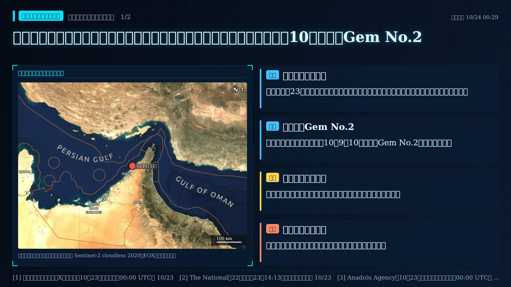
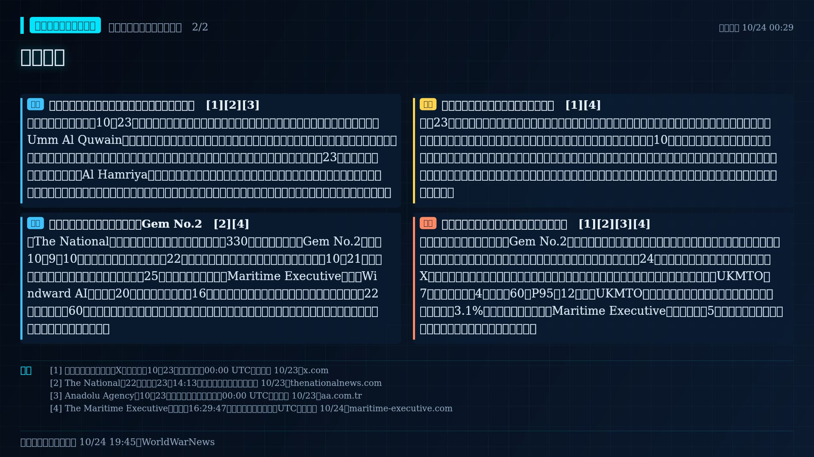

阿聯證實油輪漏油污染烏姆蓋萬海岸：全線海灘暫封，國際海事機構指向10月遇襲的Gem No.2


報導新進展｜阿聯氣候變遷與環境部證實油輪漏油上岸
阿聯氣候變遷與環境部10月23日清晨證實，其技術監測與環境評估系統偵測到一起油輪漏油，已波及烏姆蓋萬（Umm Al Quwain）海灘；部方表示沙迦、阿治曼與烏姆蓋萬居民近日聞到的燃油氣味「對健康沒有風險」，但呼籲民眾遠離上岸油污。烏姆蓋萬全部海灘與沿岸區域暫時關閉，直到技術團隊完成評估；沙迦23日下午也預防性關閉哈姆利耶（Al Hamriya）海灘，漁民被要求避開受影響海域。部方稱圍堵、隔離、清理與復原作業已與地方及聯邦機關協同展開，海岸調查仍在進行，以確認漏油完整範圍。部方聲明沒有點名船舶，也沒有說明漏油原因。
報導來源｜國際海事機構與媒體指向Gem No.2
《The National》報導，國際海事機構指認肇事船為長330公尺的超大型油輪Gem No.2，該船10月9至10日疑遭伊朗無人機攻擊，船上22名印度籍船員全數獲救；報導引述歐洲太空總署10月21日的雷達影像，顯示油污自距烏姆蓋萬海岸約25公里的油輪處外洩。《Maritime Executive》則稱Windward AI於週二（20日）在烏姆蓋萬外約16英里偵測到油污，並引述未具名報告稱污染已延伸逾22英里、面積逾60平方英里，另稱該船為巴拿馬籍、台灣船東所有。這些面積數字與船東資訊未獲阿聯官方證實，本站也未取得原始衛星影像。
研判研判｜海上襲擊的後果開始外溢到海岸
本站23日稿曾提到哈姆利耶海灘因油輪漏油暫封，但當時查無官方證實，未與任何遇襲事件連結；本輪阿聯官方已證實漏油並封閉海岸，屬實質新進展。值得注意的是，若媒體所稱肇事船確為10月上旬遇襲船，代表波斯灣航運攻擊的影響已從船舶損害延伸到沿岸環境、漁業與民生，且在遇襲近兩週後才上岸，海上受損船舶可能持續構成風險。同期伊朗聲稱在海峽及波灣打擊多艘船舶、美國中央司令部否認海峽有水雷，雙方說法均未經獨立證實，本稿不據此推定漏油成因。
待證限制｜肇事船、成因與範圍仍未由官方確認
阿聯官方未公布船名與成因；Gem No.2的指認來自媒體轉述的國際海事機構，並非官方聲明，本稿列為待證。污染面積與延伸距離各來源說法不一，官方仍在評估。安納杜魯社與沙迦24的報導均轉述同一份部方聲明，與部方X貼文同屬一源，不構成多個獨立觀測。比對說明：本站官方與量測數據沒有海岸漏油相關項目；UKMTO近7天灣區遇襲通報4件，低於60日P95的12件，但UKMTO曾表示多數遇襲船不回報；布蘭特原油最近交易日上漲3.1%，未達異常門檻，與《Maritime Executive》所稱油價創5月以來新高並不矛盾。漏油本身不在這些指標的量測範圍內。
- [1] 阿聯氣候變遷與環境部X帳號（僅知10月23日，時刻記為00:00 UTC）｜發布 10/23
- [2] The National（22日刊出，23日14:13更新；時區未標示）｜發布 10/23
- [3] Anadolu Agency（10月23日，僅知日期，時刻記為00:00 UTC）｜發布 10/23
- [4] The Maritime Executive（時間戳16:29:47，時區未標示，暫記為UTC）｜發布 10/24